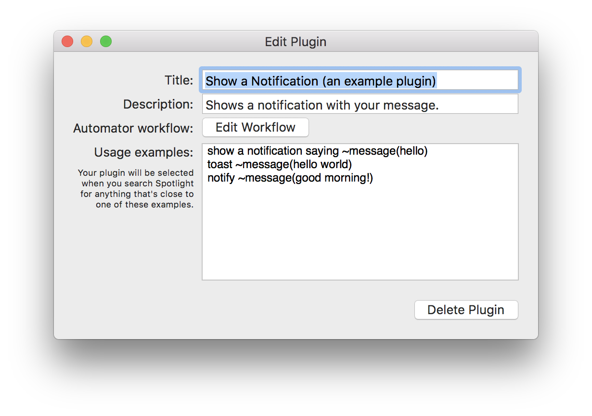
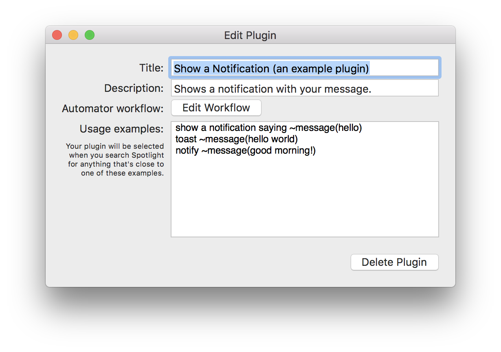

Flashlight
An unofficial Spotlight API that allows you to programmatically process queries and add additional results
Flashlight gives you control over Spotlight. There are tons of options for customization so you can do things how you want to. Flashlight is designed to make enhancing Spotlight easy and enhance it's usefulness on macOS 10.9 and up.
There are hundreds of plugins to find for Flashlight. Give it a go and find out!


 
